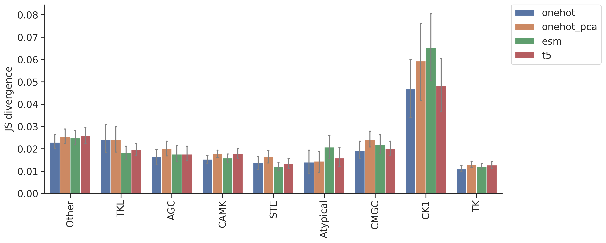
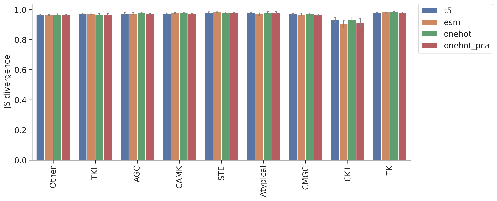

import numpy as np, pandas as pd
import os, random
from katlas.data import *
from katlas.train import *
from fastai.vision.all import *
from katlas.dnn import *DL training: Feature comparison on MLP model
Setup
seed_everything()def_device'cuda'Data
df_t5=pd.read_parquet('train/pspa_t5.parquet').reset_index()
df_esm=pd.read_parquet('train/pspa_esm.parquet').reset_index()
df_onehot = pd.read_parquet('train/pspa_onehot.parquet').reset_index()
df_onehot_pca = pd.read_parquet('train/pspa_onehot_pca.parquet').reset_index()(df_onehot['index'] == df_esm['index']).value_counts()index
True 368
Name: count, dtype: int64(df_t5['index'] == df_esm['index']).value_counts()index
True 368
Name: count, dtype: int64t5_col = df_t5.columns[df_t5.columns.str.startswith('T5_')]t5_colIndex(['T5_0', 'T5_1', 'T5_2', 'T5_3', 'T5_4', 'T5_5', 'T5_6', 'T5_7', 'T5_8',
'T5_9',
...
'T5_1014', 'T5_1015', 'T5_1016', 'T5_1017', 'T5_1018', 'T5_1019',
'T5_1020', 'T5_1021', 'T5_1022', 'T5_1023'],
dtype='object', length=1024)esm_col = df_esm.columns[df_esm.columns.str.startswith('esm_')]esm_colIndex(['esm_0', 'esm_1', 'esm_2', 'esm_3', 'esm_4', 'esm_5', 'esm_6', 'esm_7',
'esm_8', 'esm_9',
...
'esm_1270', 'esm_1271', 'esm_1272', 'esm_1273', 'esm_1274', 'esm_1275',
'esm_1276', 'esm_1277', 'esm_1278', 'esm_1279'],
dtype='object', length=1280)target_col = df_t5.columns[~df_t5.columns.isin(t5_col)][1:]target_colIndex(['-5P', '-4P', '-3P', '-2P', '-1P', '0P', '1P', '2P', '3P', '4P',
...
'-5pY', '-4pY', '-3pY', '-2pY', '-1pY', '0pY', '1pY', '2pY', '3pY',
'4pY'],
dtype='object', length=230)onehot_col = df_onehot.columns[~df_onehot.columns.isin(target_col)][1:]onehot_colIndex(['65_-', '65_A', '65_C', '65_D', '65_E', '65_F', '65_G', '65_H', '65_I',
'65_K',
...
'3192_M', '3192_N', '3192_P', '3192_Q', '3192_R', '3192_S', '3192_T',
'3192_V', '3192_W', '3192_Y'],
dtype='object', length=6849)onehot_pca_col = df_onehot_pca.columns[df_onehot_pca.columns.str.startswith('PCA')]onehot_pca_colIndex(['PCA1', 'PCA2', 'PCA3', 'PCA4', 'PCA5', 'PCA6', 'PCA7', 'PCA8', 'PCA9',
'PCA10',
...
'PCA991', 'PCA992', 'PCA993', 'PCA994', 'PCA995', 'PCA996', 'PCA997',
'PCA998', 'PCA999', 'PCA1000'],
dtype='object', length=1000)info=Data.get_kinase_info()
info = info[info.pseudo=='0']
info = info[info.kd_ID.notna()]
subfamily_map = info[['kd_ID','subfamily']].drop_duplicates().set_index('kd_ID')['subfamily']
family_map = info[['kd_ID','family']].drop_duplicates().set_index('kd_ID')['family']
group_map = info[['kd_ID','group']].drop_duplicates().set_index('kd_ID')['group']
pspa_info = pd.DataFrame(df_t5['index'].tolist(),columns=['kinase'])
pspa_info['subfamily'] = pspa_info.kinase.map(subfamily_map)
pspa_info['family'] = pspa_info.kinase.map(family_map)
pspa_info['group'] = pspa_info.kinase.map(group_map)Split
splits = get_splits(pspa_info, group='subfamily',nfold=5)
split0 = splits[0]GroupKFold(n_splits=5, random_state=None, shuffle=False)
# subfamily in train set: 120
# subfamily in test set: 29Dataset
# dataset
ds_t5 = GeneralDataset(df_t5,t5_col,target_col)
ds_esm = GeneralDataset(df_esm,esm_col,target_col)
ds_onehot = GeneralDataset(df_onehot,onehot_col,target_col)
ds_onehot_pca = GeneralDataset(df_onehot_pca,onehot_pca_col,target_col)len(ds_t5)368dl_t5 = DataLoader(ds_t5, batch_size=64, shuffle=True)
dl_esm = DataLoader(ds_esm, batch_size=64, shuffle=True)
dl_onehot = DataLoader(ds_onehot, batch_size=64, shuffle=True)
dl_onehot_pca = DataLoader(ds_onehot_pca, batch_size=64, shuffle=True)xb,yb = next(iter(dl_t5))
xb.shape,yb.shape(torch.Size([64, 1024]), torch.Size([64, 23, 10]))Model
n_t5 = len(t5_col)
n_esm = len(esm_col)
n_onehot = len(onehot_col)
n_onehot_pca = len(onehot_pca_col)
n_target = len(target_col)n_t5,n_esm,n_onehot,n_onehot_pca(1024, 1280, 6849, 1000)# def get_cnn(): return PSSM_model(n_feature,n_target,model='CNN')
def get_mlp_t5(): return PSSM_model(n_t5,n_target,model='MLP')
def get_mlp_esm(): return PSSM_model(n_esm,n_target,model='MLP')
def get_mlp_onehot(): return PSSM_model(n_onehot,n_target,model='MLP')
def get_mlp_onehot_pca(): return PSSM_model(n_onehot_pca,n_target,model='MLP')model = get_mlp_t5()logits= model(xb)logits.shapetorch.Size([64, 23, 10])Loss
CE(logits,yb)tensor(3.2301, grad_fn=<MeanBackward0>)Metrics
KLD(logits,yb)tensor(0.4888, grad_fn=<MeanBackward0>)JSD(logits,yb)tensor(0.1021, grad_fn=<MeanBackward0>)CV train
cross-validation
oof_t5 = train_dl_cv(df_t5,t5_col,target_col,
splits = splits,
model_func = get_mlp_t5,
n_epoch=20,lr=3e-3)------fold0------
lr in training is 0.003| epoch | train_loss | valid_loss | KLD | JSD | time |
|---|---|---|---|---|---|
| 0 | 3.148606 | 3.121804 | 0.402347 | 0.085257 | 00:00 |
| 1 | 3.072263 | 3.087032 | 0.367574 | 0.081199 | 00:00 |
| 2 | 3.009716 | 3.024146 | 0.304688 | 0.072146 | 00:00 |
| 3 | 2.956377 | 2.943933 | 0.224475 | 0.056424 | 00:00 |
| 4 | 2.916552 | 2.875516 | 0.156058 | 0.040018 | 00:00 |
| 5 | 2.888994 | 2.847860 | 0.128402 | 0.031854 | 00:00 |
| 6 | 2.868063 | 2.812665 | 0.093207 | 0.022109 | 00:00 |
| 7 | 2.851901 | 2.805371 | 0.085913 | 0.020331 | 00:00 |
| 8 | 2.839283 | 2.805355 | 0.085897 | 0.020335 | 00:00 |
| 9 | 2.829078 | 2.798256 | 0.078798 | 0.018366 | 00:00 |
| 10 | 2.821064 | 2.804793 | 0.085335 | 0.019795 | 00:00 |
| 11 | 2.814147 | 2.798561 | 0.079103 | 0.018454 | 00:00 |
| 12 | 2.808187 | 2.798406 | 0.078948 | 0.018366 | 00:00 |
| 13 | 2.802989 | 2.801632 | 0.082174 | 0.019130 | 00:00 |
| 14 | 2.798415 | 2.798108 | 0.078650 | 0.018254 | 00:00 |
| 15 | 2.794516 | 2.796008 | 0.076550 | 0.017756 | 00:00 |
| 16 | 2.791063 | 2.795204 | 0.075746 | 0.017629 | 00:00 |
| 17 | 2.787868 | 2.795507 | 0.076049 | 0.017736 | -1:59:59 |
| 18 | 2.785587 | 2.795144 | 0.075686 | 0.017636 | 00:00 |
| 19 | 2.783626 | 2.795208 | 0.075750 | 0.017641 | 00:00 |
------fold1------
lr in training is 0.003| epoch | train_loss | valid_loss | KLD | JSD | time |
|---|---|---|---|---|---|
| 0 | 3.138617 | 3.128191 | 0.373281 | 0.080388 | 00:00 |
| 1 | 3.052587 | 3.099994 | 0.345084 | 0.076962 | 00:00 |
| 2 | 2.987546 | 3.036049 | 0.281140 | 0.067385 | 00:00 |
| 3 | 2.936046 | 2.949912 | 0.195002 | 0.050177 | 00:00 |
| 4 | 2.899863 | 2.884509 | 0.129600 | 0.033173 | 00:00 |
| 5 | 2.874496 | 2.846201 | 0.091292 | 0.022750 | 00:00 |
| 6 | 2.855753 | 2.834026 | 0.079116 | 0.019371 | 00:00 |
| 7 | 2.840722 | 2.826782 | 0.071872 | 0.017719 | 00:00 |
| 8 | 2.828521 | 2.834439 | 0.079530 | 0.019417 | 00:00 |
| 9 | 2.819003 | 2.826963 | 0.072054 | 0.017538 | 00:00 |
| 10 | 2.810733 | 2.823351 | 0.068442 | 0.016784 | 00:00 |
| 11 | 2.803984 | 2.826729 | 0.071820 | 0.017377 | 00:00 |
| 12 | 2.798471 | 2.822295 | 0.067386 | 0.016392 | 00:00 |
| 13 | 2.793528 | 2.823175 | 0.068266 | 0.016555 | 00:00 |
| 14 | 2.789041 | 2.821938 | 0.067028 | 0.016247 | 00:00 |
| 15 | 2.785495 | 2.819557 | 0.064648 | 0.015734 | 00:00 |
| 16 | 2.782051 | 2.820376 | 0.065467 | 0.015946 | 00:00 |
| 17 | 2.779409 | 2.819542 | 0.064633 | 0.015715 | 00:00 |
| 18 | 2.776891 | 2.820054 | 0.065144 | 0.015840 | 00:00 |
| 19 | 2.774755 | 2.820162 | 0.065253 | 0.015864 | 00:00 |
------fold2------
lr in training is 0.003| epoch | train_loss | valid_loss | KLD | JSD | time |
|---|---|---|---|---|---|
| 0 | 3.132746 | 3.129335 | 0.376952 | 0.081733 | 00:00 |
| 1 | 3.044635 | 3.098221 | 0.345837 | 0.077880 | 00:00 |
| 2 | 2.977475 | 3.029599 | 0.277215 | 0.067289 | 00:00 |
| 3 | 2.928447 | 2.946265 | 0.193881 | 0.049801 | 00:00 |
| 4 | 2.894571 | 2.878941 | 0.126558 | 0.031526 | 00:00 |
| 5 | 2.870487 | 2.854545 | 0.102161 | 0.024659 | 00:00 |
| 6 | 2.851943 | 2.844638 | 0.092254 | 0.021932 | 00:00 |
| 7 | 2.837645 | 2.839031 | 0.086647 | 0.020559 | 00:00 |
| 8 | 2.826392 | 2.835832 | 0.083448 | 0.019848 | 00:00 |
| 9 | 2.817550 | 2.839705 | 0.087322 | 0.020473 | 00:00 |
| 10 | 2.810197 | 2.840906 | 0.088522 | 0.021065 | 00:00 |
| 11 | 2.804141 | 2.835611 | 0.083227 | 0.019450 | 00:00 |
| 12 | 2.798564 | 2.835332 | 0.082948 | 0.019531 | 00:00 |
| 13 | 2.793507 | 2.836511 | 0.084127 | 0.019697 | 00:00 |
| 14 | 2.789054 | 2.836247 | 0.083863 | 0.019667 | 00:00 |
| 15 | 2.785331 | 2.834682 | 0.082298 | 0.019266 | 00:00 |
| 16 | 2.782074 | 2.837207 | 0.084823 | 0.019836 | 00:00 |
| 17 | 2.779473 | 2.836932 | 0.084548 | 0.019785 | 00:00 |
| 18 | 2.777340 | 2.836301 | 0.083917 | 0.019662 | 00:00 |
| 19 | 2.775474 | 2.836297 | 0.083913 | 0.019675 | 00:00 |
------fold3------
lr in training is 0.003| epoch | train_loss | valid_loss | KLD | JSD | time |
|---|---|---|---|---|---|
| 0 | 3.133904 | 3.137529 | 0.374512 | 0.080143 | 00:00 |
| 1 | 3.051439 | 3.116435 | 0.353418 | 0.077698 | 00:00 |
| 2 | 2.983982 | 3.059940 | 0.296923 | 0.069758 | 00:00 |
| 3 | 2.933919 | 2.971472 | 0.208456 | 0.052888 | 00:00 |
| 4 | 2.897793 | 2.900559 | 0.137543 | 0.035083 | 00:00 |
| 5 | 2.873204 | 2.871643 | 0.108627 | 0.026768 | 00:00 |
| 6 | 2.854192 | 2.859234 | 0.096217 | 0.023959 | 00:00 |
| 7 | 2.838984 | 2.853621 | 0.090605 | 0.021992 | 00:00 |
| 8 | 2.827404 | 2.853444 | 0.090427 | 0.021758 | 00:00 |
| 9 | 2.817780 | 2.850291 | 0.087274 | 0.021522 | 00:00 |
| 10 | 2.809961 | 2.848032 | 0.085015 | 0.020275 | 00:00 |
| 11 | 2.803262 | 2.850563 | 0.087546 | 0.021736 | 00:00 |
| 12 | 2.797405 | 2.849761 | 0.086744 | 0.020918 | 00:00 |
| 13 | 2.792234 | 2.845738 | 0.082722 | 0.019952 | 00:00 |
| 14 | 2.787778 | 2.846671 | 0.083654 | 0.020148 | 00:00 |
| 15 | 2.783718 | 2.847657 | 0.084641 | 0.020426 | 00:00 |
| 16 | 2.780527 | 2.846283 | 0.083267 | 0.020192 | 00:00 |
| 17 | 2.777715 | 2.846755 | 0.083738 | 0.020268 | 00:00 |
| 18 | 2.775372 | 2.846951 | 0.083934 | 0.020351 | 00:00 |
| 19 | 2.773362 | 2.846569 | 0.083552 | 0.020249 | 00:00 |
------fold4------
lr in training is 0.003| epoch | train_loss | valid_loss | KLD | JSD | time |
|---|---|---|---|---|---|
| 0 | 3.125827 | 3.126822 | 0.377269 | 0.081392 | 00:00 |
| 1 | 3.043140 | 3.096131 | 0.346577 | 0.077685 | 00:00 |
| 2 | 2.979392 | 3.034656 | 0.285102 | 0.068493 | 00:00 |
| 3 | 2.931132 | 2.957115 | 0.207562 | 0.052795 | 00:00 |
| 4 | 2.896671 | 2.893782 | 0.144228 | 0.036598 | 00:00 |
| 5 | 2.872172 | 2.861912 | 0.112359 | 0.027619 | 00:00 |
| 6 | 2.854473 | 2.847451 | 0.097898 | 0.023141 | 00:00 |
| 7 | 2.840559 | 2.843453 | 0.093899 | 0.022363 | 00:00 |
| 8 | 2.829472 | 2.845010 | 0.095456 | 0.022714 | 00:00 |
| 9 | 2.820066 | 2.836954 | 0.087400 | 0.020894 | 00:00 |
| 10 | 2.812284 | 2.835765 | 0.086211 | 0.020910 | 00:00 |
| 11 | 2.805969 | 2.840066 | 0.090512 | 0.021520 | 00:00 |
| 12 | 2.800283 | 2.836174 | 0.086620 | 0.020442 | 00:00 |
| 13 | 2.795211 | 2.834489 | 0.084936 | 0.020178 | 00:00 |
| 14 | 2.790876 | 2.834798 | 0.085245 | 0.020084 | 00:00 |
| 15 | 2.786967 | 2.835122 | 0.085568 | 0.020155 | 00:00 |
| 16 | 2.783756 | 2.831621 | 0.082068 | 0.019498 | -1:59:59 |
| 17 | 2.781121 | 2.831618 | 0.082064 | 0.019431 | 00:00 |
| 18 | 2.778701 | 2.832057 | 0.082503 | 0.019483 | 00:00 |
| 19 | 2.776771 | 2.832255 | 0.082701 | 0.019531 | 00:00 |
oof_esm = train_dl_cv(df_esm,esm_col,target_col,
splits = splits,
model_func = get_mlp_esm,
n_epoch=20,lr=3e-3)------fold0------
lr in training is 0.003| epoch | train_loss | valid_loss | KLD | JSD | time |
|---|---|---|---|---|---|
| 0 | 3.170443 | 3.128315 | 0.408857 | 0.086049 | 00:00 |
| 1 | 3.091747 | 3.074181 | 0.354723 | 0.079727 | 00:00 |
| 2 | 3.024167 | 2.957788 | 0.238329 | 0.059704 | 00:00 |
| 3 | 2.968613 | 2.866479 | 0.147021 | 0.037654 | 00:00 |
| 4 | 2.926947 | 2.807119 | 0.087661 | 0.020968 | 00:00 |
| 5 | 2.896099 | 2.801955 | 0.082497 | 0.019621 | 00:00 |
| 6 | 2.873465 | 2.799124 | 0.079666 | 0.018746 | 00:00 |
| 7 | 2.856784 | 2.796772 | 0.077314 | 0.018224 | 00:00 |
| 8 | 2.843669 | 2.794605 | 0.075147 | 0.017636 | 00:00 |
| 9 | 2.833229 | 2.799318 | 0.079859 | 0.018553 | 00:00 |
| 10 | 2.824726 | 2.800097 | 0.080639 | 0.018848 | 00:00 |
| 11 | 2.817148 | 2.793399 | 0.073941 | 0.017220 | 00:00 |
| 12 | 2.810647 | 2.795838 | 0.076380 | 0.017713 | 00:00 |
| 13 | 2.805257 | 2.795752 | 0.076294 | 0.017630 | 00:00 |
| 14 | 2.800452 | 2.791506 | 0.072048 | 0.016825 | 00:00 |
| 15 | 2.796498 | 2.791960 | 0.072502 | 0.016795 | 00:00 |
| 16 | 2.792618 | 2.793065 | 0.073607 | 0.017045 | 00:00 |
| 17 | 2.789762 | 2.792158 | 0.072700 | 0.016887 | 00:00 |
| 18 | 2.787136 | 2.791858 | 0.072400 | 0.016806 | 00:00 |
| 19 | 2.784748 | 2.791649 | 0.072191 | 0.016751 | 00:00 |
------fold1------
lr in training is 0.003| epoch | train_loss | valid_loss | KLD | JSD | time |
|---|---|---|---|---|---|
| 0 | 3.122061 | 3.125437 | 0.370527 | 0.079903 | 00:00 |
| 1 | 3.039709 | 3.077375 | 0.322466 | 0.073699 | 00:00 |
| 2 | 2.981365 | 2.966509 | 0.211600 | 0.053809 | 00:00 |
| 3 | 2.933924 | 2.868390 | 0.113481 | 0.029373 | 00:00 |
| 4 | 2.898599 | 2.839211 | 0.084302 | 0.020951 | 00:00 |
| 5 | 2.873605 | 2.834185 | 0.079276 | 0.019625 | 00:00 |
| 6 | 2.855162 | 2.833194 | 0.078285 | 0.018720 | 00:00 |
| 7 | 2.840910 | 2.828449 | 0.073540 | 0.017761 | 00:00 |
| 8 | 2.829222 | 2.824754 | 0.069845 | 0.016848 | 00:00 |
| 9 | 2.819603 | 2.827720 | 0.072810 | 0.017521 | 00:00 |
| 10 | 2.811651 | 2.827686 | 0.072777 | 0.017430 | 00:00 |
| 11 | 2.804908 | 2.822721 | 0.067812 | 0.016356 | 00:00 |
| 12 | 2.799530 | 2.821344 | 0.066434 | 0.016001 | 00:00 |
| 13 | 2.794613 | 2.824224 | 0.069315 | 0.016675 | 00:00 |
| 14 | 2.790092 | 2.823013 | 0.068104 | 0.016371 | 00:00 |
| 15 | 2.786438 | 2.824799 | 0.069890 | 0.016737 | 00:00 |
| 16 | 2.783296 | 2.822070 | 0.067161 | 0.016108 | 00:00 |
| 17 | 2.780327 | 2.822039 | 0.067130 | 0.016070 | 00:00 |
| 18 | 2.778242 | 2.822380 | 0.067470 | 0.016145 | 00:00 |
| 19 | 2.776311 | 2.822826 | 0.067917 | 0.016256 | 00:00 |
------fold2------
lr in training is 0.003| epoch | train_loss | valid_loss | KLD | JSD | time |
|---|---|---|---|---|---|
| 0 | 3.131628 | 3.128202 | 0.375819 | 0.081358 | 00:00 |
| 1 | 3.046990 | 3.089172 | 0.336788 | 0.076419 | 00:00 |
| 2 | 2.980138 | 2.984057 | 0.231674 | 0.058168 | 00:00 |
| 3 | 2.931372 | 2.893255 | 0.140872 | 0.035893 | 00:00 |
| 4 | 2.896703 | 2.848695 | 0.096311 | 0.023613 | 00:00 |
| 5 | 2.872715 | 2.847809 | 0.095425 | 0.022987 | 00:00 |
| 6 | 2.854965 | 2.840352 | 0.087968 | 0.021104 | 00:00 |
| 7 | 2.841479 | 2.841226 | 0.088842 | 0.021400 | 00:00 |
| 8 | 2.829988 | 2.839816 | 0.087432 | 0.020786 | 00:00 |
| 9 | 2.820873 | 2.840088 | 0.087704 | 0.020787 | 00:00 |
| 10 | 2.813017 | 2.840173 | 0.087789 | 0.021121 | 00:00 |
| 11 | 2.806214 | 2.837716 | 0.085333 | 0.020274 | 00:00 |
| 12 | 2.800474 | 2.840278 | 0.087895 | 0.020892 | 00:00 |
| 13 | 2.795398 | 2.837604 | 0.085220 | 0.020280 | 00:00 |
| 14 | 2.791186 | 2.838032 | 0.085647 | 0.020317 | 00:00 |
| 15 | 2.787181 | 2.837193 | 0.084809 | 0.020108 | 00:00 |
| 16 | 2.783750 | 2.837958 | 0.085574 | 0.020211 | 00:00 |
| 17 | 2.781101 | 2.838556 | 0.086172 | 0.020365 | 00:00 |
| 18 | 2.778903 | 2.838520 | 0.086137 | 0.020391 | 00:00 |
| 19 | 2.776784 | 2.838481 | 0.086097 | 0.020377 | 00:00 |
------fold3------
lr in training is 0.003| epoch | train_loss | valid_loss | KLD | JSD | time |
|---|---|---|---|---|---|
| 0 | 3.120882 | 3.127987 | 0.364970 | 0.079264 | 00:00 |
| 1 | 3.036895 | 3.088904 | 0.325887 | 0.074284 | 00:00 |
| 2 | 2.972838 | 2.992755 | 0.229738 | 0.057605 | 00:00 |
| 3 | 2.926071 | 2.886852 | 0.123836 | 0.031949 | 00:00 |
| 4 | 2.892499 | 2.848272 | 0.085255 | 0.020823 | 00:00 |
| 5 | 2.870296 | 2.847814 | 0.084798 | 0.020389 | 00:00 |
| 6 | 2.853154 | 2.849026 | 0.086010 | 0.020700 | 00:00 |
| 7 | 2.839834 | 2.847083 | 0.084066 | 0.020318 | -1:59:59 |
| 8 | 2.828994 | 2.844793 | 0.081776 | 0.019672 | 00:00 |
| 9 | 2.819419 | 2.842653 | 0.079636 | 0.019257 | 00:00 |
| 10 | 2.811447 | 2.841825 | 0.078808 | 0.019056 | 00:00 |
| 11 | 2.804928 | 2.848768 | 0.085752 | 0.020495 | 00:00 |
| 12 | 2.799309 | 2.842607 | 0.079590 | 0.019078 | 00:00 |
| 13 | 2.794755 | 2.841860 | 0.078843 | 0.019069 | 00:00 |
| 14 | 2.790560 | 2.844399 | 0.081383 | 0.019448 | 00:00 |
| 15 | 2.787015 | 2.840157 | 0.077140 | 0.018435 | 00:00 |
| 16 | 2.783412 | 2.840241 | 0.077225 | 0.018553 | 00:00 |
| 17 | 2.780463 | 2.841109 | 0.078092 | 0.018732 | 00:00 |
| 18 | 2.777783 | 2.840881 | 0.077865 | 0.018649 | 00:00 |
| 19 | 2.775528 | 2.840620 | 0.077603 | 0.018587 | 00:00 |
------fold4------
lr in training is 0.003| epoch | train_loss | valid_loss | KLD | JSD | time |
|---|---|---|---|---|---|
| 0 | 3.133451 | 3.130460 | 0.380906 | 0.081534 | 00:00 |
| 1 | 3.053220 | 3.090420 | 0.340867 | 0.076725 | 00:00 |
| 2 | 2.989331 | 2.990456 | 0.240902 | 0.060124 | 00:00 |
| 3 | 2.940887 | 2.895016 | 0.145463 | 0.037410 | 00:00 |
| 4 | 2.905284 | 2.854676 | 0.105123 | 0.025265 | 00:00 |
| 5 | 2.879787 | 2.847856 | 0.098302 | 0.023136 | 00:01 |
| 6 | 2.860288 | 2.840653 | 0.091100 | 0.021613 | 00:00 |
| 7 | 2.845451 | 2.835020 | 0.085466 | 0.020448 | 00:00 |
| 8 | 2.833287 | 2.837122 | 0.087568 | 0.020906 | 00:00 |
| 9 | 2.824138 | 2.845146 | 0.095592 | 0.022325 | 00:00 |
| 10 | 2.816832 | 2.844034 | 0.094480 | 0.021783 | 00:00 |
| 11 | 2.809799 | 2.845085 | 0.095532 | 0.021947 | 00:00 |
| 12 | 2.803902 | 2.840001 | 0.090448 | 0.020957 | 00:00 |
| 13 | 2.798779 | 2.840082 | 0.090528 | 0.020978 | 00:00 |
| 14 | 2.794424 | 2.840935 | 0.091381 | 0.021004 | 00:00 |
| 15 | 2.790275 | 2.840972 | 0.091418 | 0.021129 | 00:00 |
| 16 | 2.786711 | 2.842730 | 0.093176 | 0.021477 | 00:00 |
| 17 | 2.783685 | 2.841322 | 0.091769 | 0.021195 | 00:00 |
| 18 | 2.781190 | 2.841967 | 0.092414 | 0.021321 | 00:00 |
| 19 | 2.779186 | 2.842168 | 0.092614 | 0.021357 | 00:00 |
oof_onehot = train_dl_cv(df_onehot,onehot_col,target_col,
splits = splits,
model_func = get_mlp_onehot,
n_epoch=20,lr=3e-3)------fold0------
lr in training is 0.003| epoch | train_loss | valid_loss | KLD | JSD | time |
|---|---|---|---|---|---|
| 0 | 3.107481 | 3.079334 | 0.359876 | 0.080672 | 00:00 |
| 1 | 3.024266 | 2.912568 | 0.193110 | 0.048698 | 00:00 |
| 2 | 2.961029 | 2.823816 | 0.104358 | 0.026342 | 00:00 |
| 3 | 2.913608 | 2.798980 | 0.079521 | 0.019046 | 00:00 |
| 4 | 2.879827 | 2.794405 | 0.074947 | 0.017684 | 00:00 |
| 5 | 2.855628 | 2.792629 | 0.073171 | 0.017242 | 00:00 |
| 6 | 2.837858 | 2.791636 | 0.072178 | 0.017052 | 00:00 |
| 7 | 2.824691 | 2.795679 | 0.076221 | 0.017815 | 00:00 |
| 8 | 2.814432 | 2.790493 | 0.071035 | 0.016618 | 00:00 |
| 9 | 2.806232 | 2.789299 | 0.069841 | 0.016276 | 00:00 |
| 10 | 2.799621 | 2.789852 | 0.070394 | 0.016454 | 00:00 |
| 11 | 2.794031 | 2.789215 | 0.069757 | 0.016316 | 00:00 |
| 12 | 2.789312 | 2.786340 | 0.066882 | 0.015715 | 00:00 |
| 13 | 2.785412 | 2.787108 | 0.067650 | 0.015764 | 00:00 |
| 14 | 2.781868 | 2.788352 | 0.068894 | 0.016100 | 00:00 |
| 15 | 2.779205 | 2.786545 | 0.067087 | 0.015683 | 00:00 |
| 16 | 2.776669 | 2.787676 | 0.068218 | 0.015941 | 00:00 |
| 17 | 2.774686 | 2.786329 | 0.066871 | 0.015623 | 00:00 |
| 18 | 2.772782 | 2.786216 | 0.066758 | 0.015591 | 00:00 |
| 19 | 2.771490 | 2.786206 | 0.066748 | 0.015591 | 00:00 |
------fold1------
lr in training is 0.003| epoch | train_loss | valid_loss | KLD | JSD | time |
|---|---|---|---|---|---|
| 0 | 3.105893 | 3.100944 | 0.346035 | 0.077511 | 00:00 |
| 1 | 3.014429 | 2.962021 | 0.207112 | 0.052557 | 00:00 |
| 2 | 2.950377 | 2.859910 | 0.105000 | 0.026838 | 00:00 |
| 3 | 2.902731 | 2.833114 | 0.078204 | 0.019364 | 00:00 |
| 4 | 2.869296 | 2.823380 | 0.068471 | 0.016776 | 00:00 |
| 5 | 2.846127 | 2.823797 | 0.068887 | 0.016775 | 00:00 |
| 6 | 2.828729 | 2.825376 | 0.070467 | 0.017084 | 00:00 |
| 7 | 2.815908 | 2.820808 | 0.065898 | 0.015970 | 00:00 |
| 8 | 2.805543 | 2.821366 | 0.066457 | 0.016000 | 00:00 |
| 9 | 2.797379 | 2.821266 | 0.066356 | 0.015913 | 00:00 |
| 10 | 2.790692 | 2.820984 | 0.066074 | 0.015859 | -1:59:59 |
| 11 | 2.785251 | 2.819274 | 0.064364 | 0.015452 | 00:00 |
| 12 | 2.780683 | 2.820099 | 0.065189 | 0.015606 | 00:00 |
| 13 | 2.776782 | 2.818330 | 0.063421 | 0.015201 | 00:00 |
| 14 | 2.773221 | 2.820004 | 0.065095 | 0.015603 | 00:00 |
| 15 | 2.770192 | 2.818957 | 0.064048 | 0.015363 | 00:00 |
| 16 | 2.767708 | 2.818357 | 0.063448 | 0.015216 | 00:00 |
| 17 | 2.765712 | 2.818135 | 0.063225 | 0.015147 | 00:00 |
| 18 | 2.763849 | 2.818332 | 0.063422 | 0.015199 | 00:00 |
| 19 | 2.762640 | 2.818598 | 0.063689 | 0.015266 | 00:00 |
------fold2------
lr in training is 0.003| epoch | train_loss | valid_loss | KLD | JSD | time |
|---|---|---|---|---|---|
| 0 | 3.088713 | 3.107045 | 0.354661 | 0.078924 | 00:00 |
| 1 | 3.003663 | 2.985674 | 0.233290 | 0.057648 | 00:00 |
| 2 | 2.941490 | 2.883777 | 0.131393 | 0.032687 | 00:00 |
| 3 | 2.897114 | 2.852958 | 0.100574 | 0.024289 | 00:00 |
| 4 | 2.864851 | 2.847725 | 0.095341 | 0.022589 | 00:00 |
| 5 | 2.842869 | 2.844643 | 0.092260 | 0.021997 | 00:00 |
| 6 | 2.826611 | 2.845072 | 0.092688 | 0.021976 | 00:00 |
| 7 | 2.813991 | 2.847180 | 0.094796 | 0.022378 | 00:00 |
| 8 | 2.804400 | 2.841731 | 0.089347 | 0.021196 | 00:00 |
| 9 | 2.796265 | 2.840563 | 0.088179 | 0.020948 | 00:00 |
| 10 | 2.789751 | 2.840242 | 0.087858 | 0.020796 | 00:00 |
| 11 | 2.784153 | 2.840891 | 0.088507 | 0.021003 | 00:00 |
| 12 | 2.779781 | 2.840099 | 0.087715 | 0.020793 | 00:00 |
| 13 | 2.775961 | 2.839979 | 0.087595 | 0.020757 | 00:00 |
| 14 | 2.772897 | 2.838845 | 0.086462 | 0.020503 | 00:00 |
| 15 | 2.770104 | 2.839367 | 0.086983 | 0.020601 | 00:00 |
| 16 | 2.767797 | 2.839252 | 0.086869 | 0.020576 | 00:00 |
| 17 | 2.765796 | 2.839692 | 0.087309 | 0.020678 | 00:00 |
| 18 | 2.764111 | 2.839003 | 0.086619 | 0.020530 | 00:00 |
| 19 | 2.762813 | 2.839128 | 0.086744 | 0.020563 | 00:00 |
------fold3------
lr in training is 0.003| epoch | train_loss | valid_loss | KLD | JSD | time |
|---|---|---|---|---|---|
| 0 | 3.096087 | 3.110922 | 0.347905 | 0.077215 | 00:00 |
| 1 | 3.005267 | 2.995671 | 0.232655 | 0.057557 | 00:00 |
| 2 | 2.944075 | 2.882715 | 0.119698 | 0.030261 | 00:00 |
| 3 | 2.899745 | 2.851894 | 0.088877 | 0.021891 | 00:00 |
| 4 | 2.867660 | 2.845201 | 0.082184 | 0.019869 | 00:00 |
| 5 | 2.844286 | 2.842517 | 0.079500 | 0.019032 | 00:00 |
| 6 | 2.827374 | 2.840275 | 0.077259 | 0.018516 | 00:00 |
| 7 | 2.814086 | 2.840380 | 0.077364 | 0.018408 | 00:00 |
| 8 | 2.803528 | 2.838695 | 0.075679 | 0.018048 | 00:00 |
| 9 | 2.794903 | 2.840422 | 0.077406 | 0.018451 | 00:00 |
| 10 | 2.787970 | 2.838255 | 0.075238 | 0.017898 | 00:00 |
| 11 | 2.782125 | 2.838354 | 0.075338 | 0.017878 | 00:00 |
| 12 | 2.777524 | 2.837784 | 0.074767 | 0.017789 | 00:00 |
| 13 | 2.773693 | 2.837262 | 0.074245 | 0.017670 | 00:00 |
| 14 | 2.770172 | 2.836403 | 0.073387 | 0.017436 | 00:00 |
| 15 | 2.767393 | 2.836872 | 0.073856 | 0.017510 | 00:00 |
| 16 | 2.765167 | 2.836347 | 0.073330 | 0.017404 | 00:00 |
| 17 | 2.763296 | 2.836466 | 0.073450 | 0.017456 | 00:00 |
| 18 | 2.761725 | 2.836351 | 0.073334 | 0.017465 | 00:00 |
| 19 | 2.760158 | 2.836510 | 0.073494 | 0.017488 | 00:00 |
------fold4------
lr in training is 0.003| epoch | train_loss | valid_loss | KLD | JSD | time |
|---|---|---|---|---|---|
| 0 | 3.100043 | 3.093074 | 0.343521 | 0.077535 | 00:00 |
| 1 | 3.013312 | 2.967172 | 0.217618 | 0.053456 | 00:00 |
| 2 | 2.951631 | 2.892219 | 0.142666 | 0.035091 | 00:00 |
| 3 | 2.903811 | 2.850470 | 0.100917 | 0.024567 | 00:00 |
| 4 | 2.870965 | 2.840093 | 0.090540 | 0.021754 | 00:00 |
| 5 | 2.847079 | 2.836390 | 0.086837 | 0.020592 | 00:00 |
| 6 | 2.830200 | 2.832452 | 0.082898 | 0.019636 | 00:00 |
| 7 | 2.817096 | 2.833317 | 0.083763 | 0.019721 | 00:00 |
| 8 | 2.806404 | 2.832405 | 0.082851 | 0.019474 | 00:00 |
| 9 | 2.798034 | 2.832736 | 0.083183 | 0.019539 | 00:00 |
| 10 | 2.791615 | 2.829747 | 0.080194 | 0.018905 | 00:00 |
| 11 | 2.786198 | 2.830539 | 0.080985 | 0.018936 | 00:00 |
| 12 | 2.781335 | 2.829982 | 0.080428 | 0.018835 | 00:00 |
| 13 | 2.777448 | 2.830047 | 0.080494 | 0.018879 | 00:00 |
| 14 | 2.774225 | 2.829092 | 0.079538 | 0.018666 | 00:00 |
| 15 | 2.771223 | 2.828914 | 0.079361 | 0.018591 | 00:00 |
| 16 | 2.768771 | 2.828378 | 0.078825 | 0.018487 | 00:00 |
| 17 | 2.766705 | 2.828239 | 0.078686 | 0.018401 | -1:59:59 |
| 18 | 2.765024 | 2.827764 | 0.078210 | 0.018329 | 00:00 |
| 19 | 2.763847 | 2.827958 | 0.078404 | 0.018370 | 00:00 |
oof_onehot_pca = train_dl_cv(df_onehot_pca,onehot_pca_col,target_col,
splits = splits,
model_func = get_mlp_onehot_pca,
n_epoch=20,lr=3e-3)------fold0------
lr in training is 0.003| epoch | train_loss | valid_loss | KLD | JSD | time |
|---|---|---|---|---|---|
| 0 | 3.189602 | 3.113463 | 0.394005 | 0.084773 | 00:00 |
| 1 | 3.104172 | 2.977305 | 0.257847 | 0.062730 | 00:00 |
| 2 | 3.021253 | 2.857183 | 0.137725 | 0.035252 | 00:00 |
| 3 | 2.958511 | 2.821630 | 0.102172 | 0.025253 | 00:00 |
| 4 | 2.914731 | 2.809329 | 0.089871 | 0.021631 | 00:00 |
| 5 | 2.883622 | 2.808552 | 0.089094 | 0.021433 | 00:00 |
| 6 | 2.860193 | 2.807707 | 0.088249 | 0.021026 | 00:00 |
| 7 | 2.842225 | 2.802818 | 0.083360 | 0.019840 | 00:00 |
| 8 | 2.828530 | 2.801093 | 0.081635 | 0.019522 | 00:00 |
| 9 | 2.817219 | 2.799792 | 0.080334 | 0.019123 | 00:00 |
| 10 | 2.807956 | 2.800104 | 0.080646 | 0.019109 | 00:00 |
| 11 | 2.800482 | 2.800750 | 0.081292 | 0.019176 | 00:00 |
| 12 | 2.794514 | 2.799026 | 0.079568 | 0.018824 | 00:00 |
| 13 | 2.789384 | 2.798746 | 0.079288 | 0.018717 | 00:00 |
| 14 | 2.785229 | 2.799291 | 0.079833 | 0.018810 | 00:00 |
| 15 | 2.781757 | 2.798232 | 0.078774 | 0.018590 | 00:00 |
| 16 | 2.778828 | 2.797459 | 0.078001 | 0.018401 | 00:00 |
| 17 | 2.776417 | 2.797653 | 0.078195 | 0.018469 | 00:00 |
| 18 | 2.774153 | 2.798243 | 0.078785 | 0.018586 | 00:00 |
| 19 | 2.772419 | 2.798348 | 0.078890 | 0.018593 | 00:00 |
------fold1------
lr in training is 0.003| epoch | train_loss | valid_loss | KLD | JSD | time |
|---|---|---|---|---|---|
| 0 | 3.182634 | 3.119604 | 0.364695 | 0.079957 | 00:00 |
| 1 | 3.094388 | 3.023017 | 0.268108 | 0.064864 | 00:00 |
| 2 | 3.009603 | 2.895565 | 0.140655 | 0.037207 | 00:00 |
| 3 | 2.945920 | 2.855029 | 0.100119 | 0.025731 | 00:00 |
| 4 | 2.902055 | 2.841548 | 0.086639 | 0.021765 | 00:00 |
| 5 | 2.870601 | 2.840891 | 0.085981 | 0.021420 | 00:00 |
| 6 | 2.847384 | 2.835758 | 0.080849 | 0.019897 | 00:00 |
| 7 | 2.830473 | 2.836553 | 0.081643 | 0.020070 | 00:00 |
| 8 | 2.816775 | 2.834080 | 0.079170 | 0.019415 | 00:00 |
| 9 | 2.806609 | 2.833592 | 0.078683 | 0.019308 | 00:00 |
| 10 | 2.798110 | 2.834079 | 0.079170 | 0.019278 | 00:00 |
| 11 | 2.791102 | 2.832111 | 0.077202 | 0.018827 | 00:00 |
| 12 | 2.785033 | 2.833967 | 0.079058 | 0.019225 | 00:00 |
| 13 | 2.779964 | 2.833513 | 0.078604 | 0.019094 | 00:00 |
| 14 | 2.776213 | 2.832083 | 0.077174 | 0.018749 | 00:00 |
| 15 | 2.772797 | 2.832464 | 0.077554 | 0.018839 | 00:00 |
| 16 | 2.770095 | 2.831249 | 0.076339 | 0.018502 | 00:00 |
| 17 | 2.767329 | 2.832006 | 0.077097 | 0.018690 | 00:00 |
| 18 | 2.765280 | 2.832045 | 0.077135 | 0.018729 | 00:00 |
| 19 | 2.763488 | 2.831995 | 0.077086 | 0.018688 | 00:00 |
------fold2------
lr in training is 0.003| epoch | train_loss | valid_loss | KLD | JSD | time |
|---|---|---|---|---|---|
| 0 | 3.180655 | 3.133078 | 0.380694 | 0.082307 | 00:00 |
| 1 | 3.087744 | 3.049715 | 0.297332 | 0.070353 | 00:00 |
| 2 | 3.001378 | 2.914612 | 0.162228 | 0.041429 | 00:00 |
| 3 | 2.940427 | 2.872758 | 0.120375 | 0.030020 | 00:00 |
| 4 | 2.897774 | 2.859895 | 0.107511 | 0.026098 | 00:00 |
| 5 | 2.867156 | 2.863013 | 0.110629 | 0.026861 | 00:00 |
| 6 | 2.844925 | 2.856844 | 0.104461 | 0.025312 | 00:00 |
| 7 | 2.828006 | 2.852781 | 0.100397 | 0.024134 | 00:00 |
| 8 | 2.815066 | 2.853749 | 0.101365 | 0.024317 | 00:00 |
| 9 | 2.804623 | 2.853329 | 0.100945 | 0.024254 | 00:00 |
| 10 | 2.796463 | 2.850767 | 0.098383 | 0.023635 | 00:00 |
| 11 | 2.789638 | 2.851188 | 0.098804 | 0.023729 | 00:00 |
| 12 | 2.784149 | 2.847641 | 0.095257 | 0.022792 | 00:00 |
| 13 | 2.779597 | 2.850568 | 0.098185 | 0.023457 | 00:00 |
| 14 | 2.775884 | 2.850853 | 0.098469 | 0.023641 | 00:00 |
| 15 | 2.772516 | 2.850517 | 0.098133 | 0.023541 | 00:00 |
| 16 | 2.769773 | 2.849717 | 0.097334 | 0.023291 | 00:00 |
| 17 | 2.767376 | 2.848876 | 0.096492 | 0.023068 | 00:00 |
| 18 | 2.765348 | 2.848939 | 0.096556 | 0.023068 | 00:00 |
| 19 | 2.763793 | 2.849362 | 0.096978 | 0.023216 | 00:00 |
------fold3------
lr in training is 0.003| epoch | train_loss | valid_loss | KLD | JSD | time |
|---|---|---|---|---|---|
| 0 | 3.171948 | 3.122044 | 0.359027 | 0.078739 | 00:00 |
| 1 | 3.078477 | 3.038632 | 0.275615 | 0.066434 | 00:00 |
| 2 | 2.995987 | 2.918788 | 0.155771 | 0.040377 | 00:00 |
| 3 | 2.935148 | 2.868035 | 0.105018 | 0.026499 | 00:00 |
| 4 | 2.893677 | 2.856677 | 0.093661 | 0.023154 | 00:00 |
| 5 | 2.863889 | 2.860430 | 0.097414 | 0.023751 | 00:00 |
| 6 | 2.841698 | 2.854681 | 0.091664 | 0.022408 | 00:00 |
| 7 | 2.825094 | 2.852442 | 0.089426 | 0.021593 | 00:00 |
| 8 | 2.812347 | 2.851212 | 0.088195 | 0.021338 | 00:00 |
| 9 | 2.802684 | 2.850125 | 0.087109 | 0.020951 | 00:00 |
| 10 | 2.794548 | 2.848400 | 0.085383 | 0.020580 | 00:00 |
| 11 | 2.788096 | 2.847420 | 0.084403 | 0.020379 | -1:59:59 |
| 12 | 2.782459 | 2.848621 | 0.085605 | 0.020491 | 00:00 |
| 13 | 2.777640 | 2.847715 | 0.084698 | 0.020367 | 00:00 |
| 14 | 2.773699 | 2.847724 | 0.084707 | 0.020411 | 00:00 |
| 15 | 2.770435 | 2.847151 | 0.084134 | 0.020171 | 00:00 |
| 16 | 2.767452 | 2.847463 | 0.084447 | 0.020274 | 00:00 |
| 17 | 2.765041 | 2.847303 | 0.084286 | 0.020241 | 00:00 |
| 18 | 2.762976 | 2.847187 | 0.084170 | 0.020176 | 00:00 |
| 19 | 2.761266 | 2.846792 | 0.083776 | 0.020062 | 00:00 |
------fold4------
lr in training is 0.003| epoch | train_loss | valid_loss | KLD | JSD | time |
|---|---|---|---|---|---|
| 0 | 3.168980 | 3.113049 | 0.363495 | 0.080159 | 00:00 |
| 1 | 3.080419 | 3.011974 | 0.262420 | 0.064262 | 00:00 |
| 2 | 2.998897 | 2.907214 | 0.157660 | 0.039925 | 00:00 |
| 3 | 2.938524 | 2.865003 | 0.115449 | 0.028375 | 00:00 |
| 4 | 2.896167 | 2.856457 | 0.106903 | 0.026023 | 00:00 |
| 5 | 2.866137 | 2.853608 | 0.104054 | 0.025234 | 00:00 |
| 6 | 2.844121 | 2.851347 | 0.101793 | 0.024680 | 00:00 |
| 7 | 2.827480 | 2.847170 | 0.097616 | 0.023724 | 00:00 |
| 8 | 2.815023 | 2.844982 | 0.095428 | 0.023147 | 00:00 |
| 9 | 2.804815 | 2.843091 | 0.093538 | 0.022543 | 00:00 |
| 10 | 2.796711 | 2.843977 | 0.094423 | 0.022789 | 00:00 |
| 11 | 2.790092 | 2.843254 | 0.093701 | 0.022592 | 00:00 |
| 12 | 2.784432 | 2.842181 | 0.092628 | 0.022250 | 00:00 |
| 13 | 2.779616 | 2.841425 | 0.091872 | 0.022164 | 00:00 |
| 14 | 2.776180 | 2.840833 | 0.091280 | 0.021957 | 00:00 |
| 15 | 2.772646 | 2.840190 | 0.090637 | 0.021706 | 00:00 |
| 16 | 2.770050 | 2.839524 | 0.089970 | 0.021553 | 00:00 |
| 17 | 2.767612 | 2.840582 | 0.091028 | 0.021872 | 00:00 |
| 18 | 2.765678 | 2.840996 | 0.091442 | 0.021974 | 00:00 |
| 19 | 2.764087 | 2.840355 | 0.090801 | 0.021799 | 00:00 |
Score
from katlas.pssm import *
from functools import partialdef score_df(target,pred,func):
distance = [func(target.loc[i],pred.loc[i,target.columns]) for i in target.index]
return pd.Series(distance,index=target.index)jsd_df = partial(score_df,func=js_divergence_flat)
jss_df = partial(score_df,func=js_similarity_flat)
kld_df = partial(score_df,func=kl_divergence_flat)target=df_t5[target_col].copy()(oof_t5.nfold == oof_esm.nfold).value_counts()nfold
True 368
Name: count, dtype: int64pspa_info['split'] = oof_t5.nfoldpspa_info['t5'] =jsd_df(target,oof_t5)
pspa_info['esm'] =jsd_df(target,oof_esm)
pspa_info['onehot'] =jsd_df(target,oof_onehot)
pspa_info['onehot_pca'] =jsd_df(target,oof_onehot_pca)from katlas.plot import *set_sns()pspa_info.to_parquet('raw/MLP_feature_compare_subfamily.parquet')plot_group_bar(pspa_info,['onehot','onehot_pca','esm','t5',],group='group')
plt.ylabel('JS divergence')
save_svg('fig/MLP_feature_comparison.svg')
For JS similarity (less differentiated)
pspa_info['t5'] =jss_df(target,oof_t5)
pspa_info['esm'] =jss_df(target,oof_esm)
pspa_info['onehot'] =jss_df(target,oof_onehot)
pspa_info['onehot_pca'] =jss_df(target,oof_onehot_pca)plot_group_bar(pspa_info,['t5','esm','onehot','onehot_pca'],group='group')
plt.ylabel('JS divergence')Text(0, 0.5, 'JS divergence')